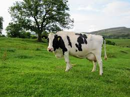
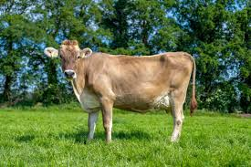
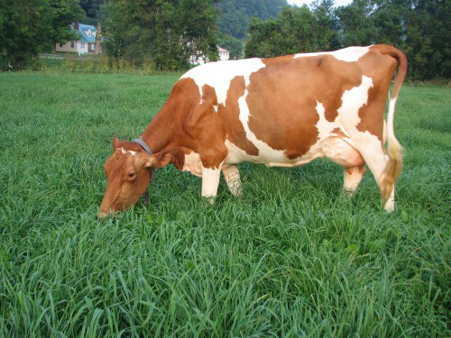
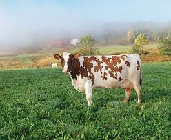
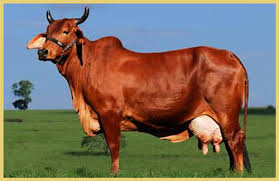
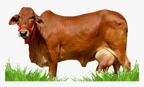
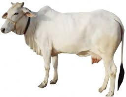

1. Holstein Friesian
The Holstein Friesian is the global icon of dairy farming. Originating from the Netherlands, it’s known for producing the highest volume of milk — smooth, pure, and perfect for fresh dairy products.
Origin: Netherlands🥛 Milk Yield: 25–30 liters/day
💧 Milk Type: Low-fat, high volume
🌿 Temperament: Calm and highly adaptable.', this)">
2. Jersey
Small but mighty, the Jersey cow produces milk rich in butterfat — perfect for cream, butter, and cheese lovers.

3. Brown Swiss
Strong, calm, and reliable — the Brown Swiss produces creamy, protein-rich milk ideal for fine cheese.
Origin: Switzerland🥛 Milk Yield: 22–27 liters/day
🧀 Milk Type: Creamy, ideal for cheese
🕊️ Personality: Gentle and enduring.', this)">
4. Guernsey
The “Golden Cow” of the dairy world, Guernsey milk glows with golden color thanks to natural beta-carotene richness.
Origin: Channel Islands🥛 Milk Yield: 20–25 liters/day
✨ Milk Type: Golden, rich in beta-carotene
💚 Nature: Gentle and intelligent.', this)">
5. Ayrshire
Elegant and adaptable, Ayrshire cows produce balanced milk suitable for both drinking and dairy processing.
Origin: Scotland🥛 Milk Yield: 20–25 liters/day
⚖️ Milk Type: Balanced fat and protein
🌾 Feature: Hardy and efficient.', this)">
6. Red Sindhi
Thriving in tropical climates, Red Sindhi cows produce rich milk and show impressive disease resistance.
Origin: Pakistan🥛 Milk Yield: 15–18 liters/day
🌞 Feature: Heat-tolerant, disease resistant
🧡 Milk Type: Thick and flavorful.', this)">
7. Sahiwal
The pride of tropical dairy farming — Sahiwal cows produce rich, high-fat milk even in hot climates.
Origin: India/Pakistan🥛 Milk Yield: 18–25 liters/day
🍶 Milk Type: High fat, creamy texture
🌤️ Strength: Resilient in heat.', this)">
8. Tharparkar
Born in the deserts of India, Tharparkar cows symbolize strength, providing steady milk under harsh conditions.
Origin: India🥛 Milk Yield: 15–20 liters/day
☀️ Feature: Highly heat-resistant
💧 Milk Type: Mild flavor, consistent yield.', this)">